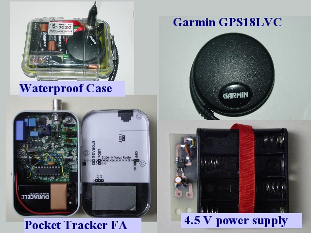

Notes:
This tracker uses the Garmin GPS18LVC, a low voltage GPS receiver without a display, the PocketTrackerFA as radio and TNC. The PocketTracker uses a 9 volt battery as its power supply, the GPS18LVC is run from a separate 4.5 volt power supply, which uses a low power voltage regulator.